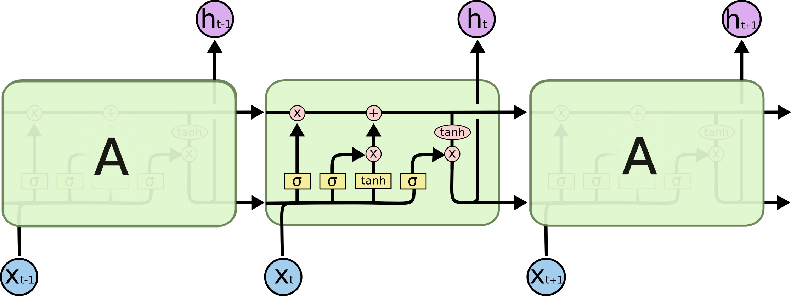
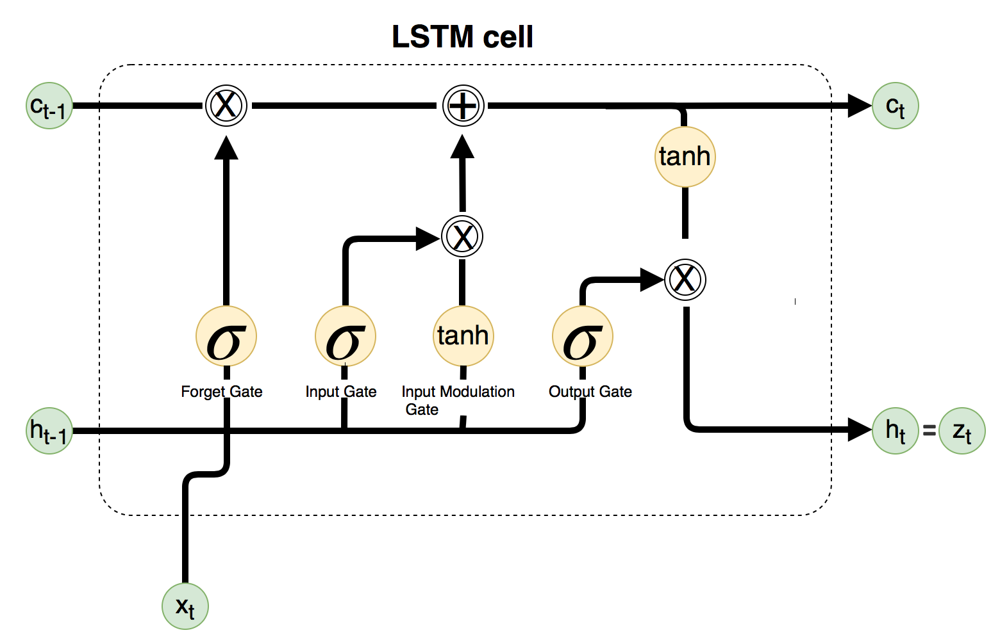

深度学习-详解LSTM网络和TensorFlow实现
LSTM网络是RNN网络中的特殊网络，再RNN文章中已经提到，RNN在时间步过长时，学习不到依赖关系。主要是RNN会引起梯度消失和梯度爆炸这两个问题，因此为了解决问题，研究者们提出了很多方式，其中GRU和LSTM网络就是这样诞生的。LSTM网络在应用中也取得了非凡的成就，特别是在语音识别，语言建模，翻译等等方面。
##1.长期依赖问题
RNN的核心就是能将历史的信息连接到当前的场景下，即RNN对历史是有记忆功能的，能对一定时间步的信息进行记忆。但是time step过长的时候，就会出现问题，对过久(时间跨度太大的信息)信息没有记忆。从理论的角度RNN是有这样的功能，在应用中却不尽人意。为了解决这种长期依赖的问题，研究者提出了新的RNN模型，如GRU，LSTM等网络，来解决这种长期依赖的问题。
2.什么是LSTM网络
LSTM，全称为长短期记忆网络（Long Short Term Memory networks）,它也是一种特殊的RNN网络，但是可以学习到长期依赖的关系。那么LSTM是如何解决长期依赖的问题呢？
在RNN中我们也提到了，可以通过gate的方式来解决梯度消失和梯度爆炸的问题，而LSTM就是通过gate的方式来实现的。下面是LSTM的cell单元可视化结构。
下面是在整个时间序列上LSTM的整体结构，\(X_t\)表示不同时间点的输入序列，\(h_t\)为每个时间点的输出，从下面的结构图中可以看出LSTM网络中比RNN网络多了一个循环结构，从上面的结构中可以看出，LSTM Cell中多出了一个\(C_t\)的的变量，在LSTM中被称为记忆单元，记忆单元贯穿整个时间步，不会被输出，只会在循环过程中进行更新，并输出到下一时间步作为输入。\(C_t\)在每个cell中会进行简单的线性交互，上面承载了一些历史的输入信息。

3.LSTM结构详解
从上面中也提出了LSTM Cell中主要通过gate的方式在RNN基础上进行变换的。具体LSTM Cell的结构如下所示，主要通过三道gate（门）来控制输入，输出等，这个门来选择性的控制信息的是否通过。主要是通过sigmod神经网络层和一个元素的乘积实现门的控制。

3.1 LSTM分步详解
LSTM Cell的整体输入有：\(X_t\)，\(h_{t-1}\)，\(c_{t-1}\)，而整体输出和RNN的输出一致，主要是\(h_t\)，\(z_t\)；而\(c_t\)主要是在循环过程中使用。而LSTM Cell中最关键的就是gate实现，而LSTM的三道门主要作用是不一样的，分别为"遗忘门"，"输入门"，"输出门"；下面分别对这三道门进行分别详细说明。
3.1.1 Forget Gate
遗忘门主要对\(h_{t-1}\)和\(x_t\)进行观察，对记忆单元\(C_{t-1}\)的元素选择性的遗忘，遗忘门输出的是0-1的数，1表示完全保留该消息，0表示遗忘该消息。遗忘门输出一个\(f_t\)，公式为：
3.1.2 Input Gate
这一步的主要作用是将旧的记忆单元\(c_{t-1}\)更新到新的记忆单元\(c_t\)上。这一步只需要将\(c_{t-1}\)乘以\(f_t\)在加上\(i_t\)*\(c_{t}^-\)即可。\(i_t\)则为输入门，可以理解为对本次的输入更新程度。，具体公式如下：
3.1.3 Output Gate
最后需要决定最终的输出，输出会基于当前的信息，并且可能会进行一些过滤，并用于下一步和\(C_t\)的结合中，确定最终的输出值：
3.2 LSTM网络结构可视化
根据LSTM Cell的结构，即内部的计算公式进行内部结构可视化，从输入，到计算，再到输出的过程进行详细的结构可视化，如下图所示：
上面将LSTM Cell进行了划分，主要划分为三个部分，第一部分主要是三道门和输入的转换；第二部分可以看作是记忆单元\(C_t\)的更新；第三部分就是输出部分。
在上面的结构中也给出了输入，输出的数据shape，明白数据在整个计算过程中是怎么流通和计算的。并可以根据输入的情况，知道参数的shape等。在计算过程中，三道门中的参数\(W\)的shape分为两种情况：
- 当\(X_t\)和\(H_{t-1}\)进行
concat后，参数W的shape为(depth+n_hidden_units， n_hidden_units)，参数\(b\)的shape为(n_hidden_units)。 - 当\(X_t\)和\(H_{t-1}\)分别和参数\(W\)进行运算，那么参数\(W\)就会存在两个，\(W_x\)的
shape为(depth, n_hidden_units)，\(W_h\)的\(shape\)为(n_hidden_units, n_hidden_units)；参数\(b\)的shape为(n_hidden_units)。
三个gate的输出分别为\(f_t\)，\(i_t\)，\(o_t\)；这三个值的输出shape均为(batch_size, n_hidden_units)。
4.LSTM网络在TensorFlow中的实现
LSTM也是RNN网络中的一种，因此在TensorFlow实现时，和RNN模型实现的方式一致，唯一不同的地方在RNN中定义cell的地方。在TensorFlow中实现了LSTM Cell的基本结构，实现了两种LSTM Cell的结构BasicLSTMCell和LSTMCell，下面依次对两种结构进行说明。
4.1 BasicLSTMCell实现
这个Cell的实现是以最基本的LSTM结构为基础，在TensorFlow中实现了该结构，也是基于LayerRNNCell实现的，主要实现了build和call方法，下面为call方法的源码：
def call(self, inputs, state):
"""Long short-term memory cell (LSTM).
Args:
inputs: `2-D` tensor with shape `[batch_size, input_size]`.
state: An `LSTMStateTuple` of state tensors, each shaped
`[batch_size, self.state_size]`, if `state_is_tuple` has been set to
`True`. Otherwise, a `Tensor` shaped
`[batch_size, 2 * self.state_size]`.
Returns:
A pair containing the new hidden state, and the new state (either a
`LSTMStateTuple` or a concatenated state, depending on
`state_is_tuple`).
"""
sigmoid = math_ops.sigmoid
one = constant_op.constant(1, dtype=dtypes.int32)
# Parameters of gates are concatenated into one multiply for efficiency.
if self._state_is_tuple:
c, h = state
else:
c, h = array_ops.split(value=state, num_or_size_splits=2, axis=one)
gate_inputs = math_ops.matmul(
array_ops.concat([inputs, h], 1), self._kernel)
gate_inputs = nn_ops.bias_add(gate_inputs, self._bias)
# i = input_gate, j = new_input, f = forget_gate, o = output_gate
i, j, f, o = array_ops.split(
value=gate_inputs, num_or_size_splits=4, axis=one)
forget_bias_tensor = constant_op.constant(self._forget_bias, dtype=f.dtype)
# Note that using `add` and `multiply` instead of `+` and `*` gives a
# performance improvement. So using those at the cost of readability.
add = math_ops.add
multiply = math_ops.multiply
new_c = add(multiply(c, sigmoid(add(f, forget_bias_tensor))),
multiply(sigmoid(i), self._activation(j)))
new_h = multiply(self._activation(new_c), sigmoid(o))
if self._state_is_tuple:
new_state = LSTMStateTuple(new_c, new_h)
else:
new_state = array_ops.concat([new_c, new_h], 1)
return new_h, new_state
源码中主要对四个gate进行计算，并更新C和H，并返回输出和state，LSTM中的state包括了C和H。上面代码中对四个gate的计算，是一次性生成权重变量，再和输入的\(X_t\)和\(H_{t-1}\)进行运算，再拆分为四部分，权重变量的定义如下：
def build(self, inputs_shape):
if inputs_shape[1].value is None:
raise ValueError("Expected inputs.shape[-1] to be known, saw shape: %s"
% inputs_shape)
input_depth = inputs_shape[1].value
h_depth = self._num_units
self._kernel = self.add_variable(
_WEIGHTS_VARIABLE_NAME,
shape=[input_depth + h_depth, 4 * self._num_units])
self._bias = self.add_variable(
_BIAS_VARIABLE_NAME,
shape=[4 * self._num_units],
initializer=init_ops.zeros_initializer(dtype=self.dtype))
self.built = True
在定义LSTM中四道gate的权重变量W和B时，是一次性定义了4个，并在一个变量中。后续在计算时，做一次计算，再进行拆分成四道gate的输出：i,j,f,o。
4.2 LSTMCell的实现
LSTMCell是BasicLSTMCell扩展实现，增加了窥视的窥视孔的功能，LSTMCell的初始化参数如下所示，先对初始化的参数进行详细说明。

def __init__(self, num_units, use_peepholes=False, cell_clip=None, initializer=None, num_proj=None,
proj_clip=None, num_unit_shards=None, num_proj_shards=None, forget_bias=1.0,
state_is_tuple=True, activation=None, reuse=None, name=None):
"""Initialize the parameters for an LSTM cell.
Args:
num_units: int, The number of units in the LSTM cell.
use_peepholes: bool, 是否使用窥视孔, 当设置为True时则使用窥视孔.
cell_clip: (optional) A float value, 单元(四个gate)输出的值被限制在`±cell_clip`内.
initializer: (optional) 用于权重和投影矩阵(projection matrices)的初始值设定.
num_proj: (optional) int, 投影矩阵的输出维数. 如果设置为None则不执行`投影`操作.
proj_clip: (optional) A float value. 如果设置了 `num_proj > 0` 和 `proj_clip`, 则投影值将被限制在`[-proj_clip, proj_clip]`范围内.
num_unit_shards: Deprecated, 已经弃用.
num_proj_shards: Deprecated, 已经弃用.
forget_bias: Biases of the forget gate are initialized by default to 1 in order to reduce the scale of forgetting at the beginning of the training. Must set it manually to `0.0` when restoring from CudnnLSTM trained checkpoints.
state_is_tuple: If True, accepted and returned states are 2-tuples of the `c_state` and `m_state`. If False, they are concatenated along the column axis. This latter behavior will soon be deprecated.
activation: Activation function of the inner states. Default: `tanh`.
reuse: (optional) Python boolean describing whether to reuse variables in an existing scope. If not `True`, and the existing scope already has the given variables, an error is raised.
name: String, the name of the layer. Layers with the same name will share weights, but to avoid mistakes we require reuse=True in such cases.
When restoring from CudnnLSTM-trained checkpoints, use `CudnnCompatibleLSTMCell` instead.
"""
从上面参数说明，可以看出LSTMCell中主要多处了一个窥视孔的功能，当参数use_peepholes设置为True时，就使用了窥视孔的功能。后续的几个参数也是对窥视功能的设置参数。下面对实现的call方法进行简要说明：
def call(self, inputs, state):
"""Run one step of LSTM.
Args:
inputs: input Tensor, 2D, `[batch, num_units].
state: if `state_is_tuple` is False, this must be a state Tensor, `2-D, [batch, state_size]`. If `state_is_tuple` is True, this must be a tuple of state Tensors, both `2-D`, with column sizes `c_state` and `m_state`.
Returns:
A tuple containing:
- A `2-D, [batch, output_dim]`, Tensor representing the output of the LSTM after reading `inputs` when previous state was `state`.
Here output_dim is:
num_proj if num_proj was set, num_units otherwise.
- Tensor(s) representing the new state of LSTM after reading `inputs` when the previous state was `state`. Same type and shape(s) as `state`.
Raises:
ValueError: If input size cannot be inferred from inputs via static shape inference.
"""
num_proj = self._num_units if self._num_proj is None else self._num_proj
sigmoid = math_ops.sigmoid
if self._state_is_tuple:
(c_prev, m_prev) = state
else:
c_prev = array_ops.slice(state, [0, 0], [-1, self._num_units])
m_prev = array_ops.slice(state, [0, self._num_units], [-1, num_proj])
input_size = inputs.get_shape().with_rank(2)[1]
if input_size.value is None:
raise ValueError("Could not infer input size from inputs.get_shape()[-1]")
# i = input_gate, j = new_input, f = forget_gate, o = output_gate
lstm_matrix = math_ops.matmul(
array_ops.concat([inputs, m_prev], 1), self._kernel)
lstm_matrix = nn_ops.bias_add(lstm_matrix, self._bias)
i, j, f, o = array_ops.split(
value=lstm_matrix, num_or_size_splits=4, axis=1)
# Diagonal connections
if self._use_peepholes:
c = (sigmoid(f + self._forget_bias + self._w_f_diag * c_prev) * c_prev +
sigmoid(i + self._w_i_diag * c_prev) * self._activation(j))
# sigmoid(f + self._forget_bias + self._w_f_diag * c_prev)为新的forget输出,
# sigmoid(i + self._w_i_diag * c_prev) 为新的input_gate输出
else:
c = (sigmoid(f + self._forget_bias) * c_prev + sigmoid(i) *
self._activation(j))
if self._cell_clip is not None:
# pylint: disable=invalid-unary-operand-type
c = clip_ops.clip_by_value(c, -self._cell_clip, self._cell_clip)
# pylint: enable=invalid-unary-operand-type
if self._use_peepholes:
m = sigmoid(o + self._w_o_diag * c) * self._activation(c)
else:
m = sigmoid(o) * self._activation(c)
if self._num_proj is not None:
m = math_ops.matmul(m, self._proj_kernel)
if self._proj_clip is not None:
# pylint: disable=invalid-unary-operand-type
m = clip_ops.clip_by_value(m, -self._proj_clip, self._proj_clip)
# pylint: enable=invalid-unary-operand-type
new_state = (LSTMStateTuple(c, m) if self._state_is_tuple else
array_ops.concat([c, m], 1))
return m, new_state
上面call方法实现的过程中，输出的维度为num_proj(如果设置了num_proj的值)或num_units。当计算c的时候取决于是否使用窥视孔，使用的时候计算方式会不同sigmoid(f + self._forget_bias + self._w_f_diag * c_prev)为新的forget gate输出(加入了窥视孔self._w_f_diag * c_prev), sigmoid(i + self._w_i_diag * c_prev) 为新的input gate输出，然后会限制c = clip_ops.clip_by_value(c, -self._cell_clip, self._cell_clip)输出。再计算m的时候也会取决于是否使用窥视孔，再对m的值进行限定。最后输出m和state。
当定义好了Cell后，后续就是动态或者静态计算时间步，或者多层的LSTM模型，和RNN网络中的使用就是一样的。这里就不再详细说明。
5.Refrence
(3).[译]理解LSTM网络